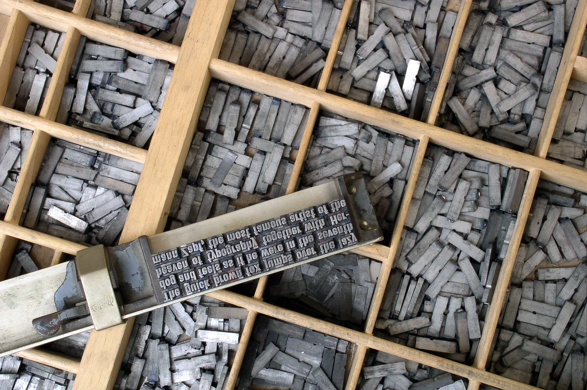

Old-Fashioned Typesetting

Old-fashioned typesetting: involved arranging metal letters by hand to create printed pages. The process took time, and correcting mistakes required moving or replacing the letters.
Desktop Publishing
Desktop publishing uses computer software to arrange text and images. Like traditional typesetting, it focuses on the appearance of a page. However, designers can edit their work more quickly and preview it before printing.
HTML and CSS
HTML organizes the content of a web page using elements such as headings, paragraphs and sections. CSS controls its appearance, including fonts, colours and backgrounds. A style sheet can apply the same design to several pages.
Comparing the Methods
All these methods organize text to make information easier to read. Traditional typesetting uses physical materials, while desktop publishing uses digital tools. Both usually produce fixed pages. HTML and CSS create web pages that can adjust to different screen sizes.